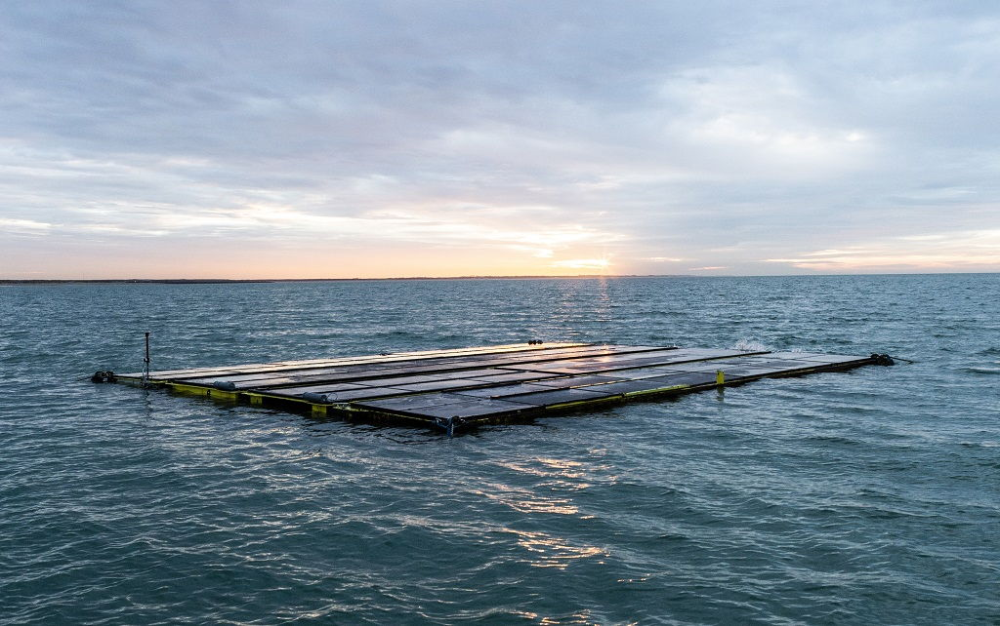

Joost Wouters is an entrepreneur leading the seaweed industry towards a brighter future. He is "SeaEO" of The Seaweed Company, an innovative enterprise working to realise the transformative impact of seaweed across the world.
In this edited conversation with Peter Green, Joost spoke about his background as a consultant, any advice for fellow founders, book recommendations and the future of the seaweed industry.
What was the motivation behind creating The Seaweed Company?
I used to work for fast-moving consumer companies and also had my own consulting firm. In this role I helped companies increase their wealth and sustainability but, as time went on, I had a growing urge to make a more tangible impact.
As I was looking into which fields I could work in, I ran into seaweed. From there I did a lot of research and found out how non-existent the industry was outside of Asia. So much pioneering work has to be done when starting an industry and I thought it was a great place to be.
What have been some of the biggest challenges that you've experienced running The Seaweed Company?
If you want to start in a new industry you almost always have to be vertically integrated. We cannot outsource parts of our value chain. This involves building both seaweed-based products and a sustainable supply chain. So, if you need to manage all these moving parts at the same time it can be challenging. That’s partly because you need to come up with cultivation concepts for growing brown, green and red seaweeds, each of which have their own challenges. Then you have to formulate different products and find markets for them.
In addition, this is quite a capital intensive field where financing can be a challenge, particularly during COVID.
How do you try to grow consumer interest in your products?
Traditionally there are always a few companies out there with a product looking for a problem. What we tend to do, thanks in part to the experience I have with companies like Procter and Gamble and Pepsi Cola, is build a solution which we can sell. For example, we now have a concept called Blue Farming where we use the power of the ocean to accelerate the transition to sustainable and organic farming. All our diverse seaweed-based agricultural products fit into that concept which is much easier to communicate to buyers.
Given your involvement in generating solutions across different industries, is there one area where you've seen a growing trend for the use of your seaweed products?
Blue farming is currently the industry where we get the best traction. It's also where the consumers are most aware. This has been brought about thanks to some beautiful documentaries like "Kiss the Ground". With Blue Farming we regenerate the oceans and ocean life. We also make products which help soil absorb more and more carbon, allowing plants to grow faster with less stress, less water, and better heat resistance. The same can be said for animals.

The Seaweed company was involved in developing an offshore solar-powered seaweed farm. Could you expand a bit on how that project has developed?
It’s worth clarifying that this project involves a solar-seaweed farm that is part of a multi-use approach for wind farms. The topic under question is how can we best use the space between wind turbines in a wind park.
If you look at wind parks right now, the distance between two turbines is about one kilometre and the rotor blades are about 100m long. This creates large areas where ships cannot sail and other sea activities are limited. In Europe, governments want the wind park owners to use the space. Using seaweed is one solution for that, and when combined with solar, generates a very strong concept to offer the wind farm.
One of the benefits of this project is the collaboration between the teams. For example, if a team from the solar company goes out to monitor their panels, they will also pass our floats and check to see what’s going on. Through sharing resources and maintenance trips we can provide a big, shared benefit.
What's your take on the seaweed industry in general? Where do you see it going in the coming five years?
The industry is growing for several reasons. One reason involves the growth in consumer awareness which is demanding a more sustainable future. Seaweed plays a central role in that and companies like Unilever list algae as numbers one and two in their list of 50 foods for the future. In the food industry, we are seeing how the applications are starting to increase for seaweed. For example, you can blend it in meat and make hybrid burgers where you replace 30-40% of meat with seaweed. You can change the whole texture and improve the taste.
Secondly, governments and policies are being created in the EU in order to reduce carbon emissions. Seaweed can be crucially important in that area.
That trend upwards in the seaweed industry in itself will naturally bring its own challenges. What we don't want to do is make the same mistakes we made on land. For example, mono-culture and the way that seaweed is grown in some Asian countries is unsustainable. We need to look at sustainable ways of cultivating where we include local communities and protect nature.
What’s next for you guys at The Seaweed Company?
We have left the start-up stage behind us now and have developed a whole suite of processes for the different areas of our business.
On the cultivation side, we have concepts to grow green seaweed, red seaweed and brown seaweed that we can duplicate all over the world to create the quantity of biomass that we need. On the product side, we have a large range of products that are ready to go on the market.
So we are looking for new investments next which we will use to scale. At present we have too few people to work on the crucial areas of sourcing, financing, running operations, product development and marketing. Exciting times ahead.
What advice might you give to your younger self or someone starting out on this journey of agriculture and sustainably focussed businesses?
The right mindset is very important as this is a pioneering industry facing many challenges. All these challenges will try to stop you but stopping is simply not an option.
Secondly, find the right people around you and don't try to do this by yourself. Share, share, share your knowledge and your questions. Don't be too protective of your information in this nascent market.
What books might you recommend to someone who's trying to build ventures in this space?
I’ve worked as a consultant in the past so I've learned a lot about how organisations work. In the case of The Seaweed Company, not only are we starting a new industry, but we have the opportunity to create an organisation that is fit for the 22nd century and better than traditional companies. Everything that we do must have ecological, social, economic and financial impact. It's simply not a choice. From a work standpoint we cannot have bosses or managers that tell people what to do. So, with that in mind, I would recommend Ricardo Semler's work on creating self-steering organisations and Frédéric Laloux’s “Reinventing Organisations”.
Additional great books are Kate Raworth’s “Doughnut Economics” and the book “Drawdown” which I helped bring to the Netherlands.